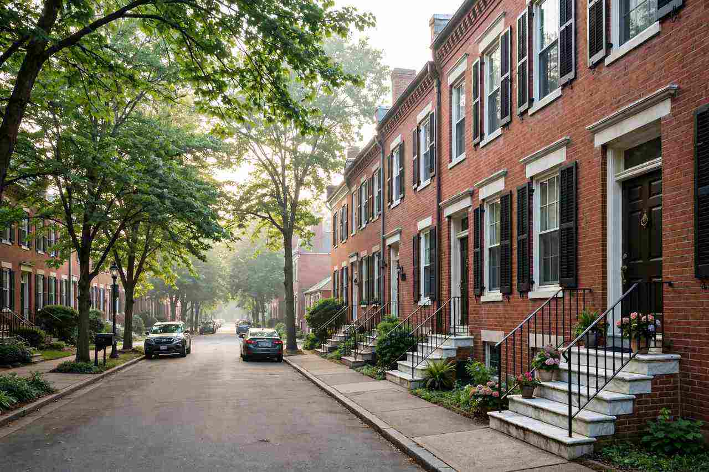

Rodent Control · Forest Heights, MD
Fast Rodent Control in Forest Heights, MD
Hearing scratching at night or finding droppings in Forest Heights? Murvo is a rodent-only specialist offering same-day service from local crews. We identify the species, remove the infestation, clean up the mess, and exclude rodents for good. Pricing is flat-rate and quoted in writing, the work is guaranteed in writing, and coverage extends across Prince George's County for homes and businesses alike. Service covers 2 ZIP codes across Prince George's County, including 20750, 20745, with same-day appointments where schedules allow.
24/7Availability
2ZIP codes covered
Same-dayResponse
Licensed · Upfront options · Written guarantees · Fully insured
Forest Heights at a glance
Local Rodent Control for Forest Heights, MD.
Prince George's County
Countycentral Maryland
RegionWaldorf · 14 mi
Nearest metro30 miles southwest of Annapolis
From Annapolis2
ZIP codes covered Service by service in Forest Heights
Rodent Control Services Available in Forest Heights
Rodent-only specialists serving Forest Heights and Prince George's County. Every service below is explained in local terms - the species involved, the entry points that matter in historic rowhomes, brick twins, older apartments, and wooded suburban single-family homes, and the seasonal timing that decides whether a fix lasts.
- 01Rodent Control↗
- 02Rodent Inspection↗
- 03Rodent Removal↗
- 04Rodent Exclusion↗
- 05Rodent Proofing↗
- 06Rat Control↗
- 07Mice Control↗
- 08Mouse Removal↗
- 09Rat Removal↗
- 10Rodent Trapping↗
- 11Rodent Baiting↗
- 12Rodenticide Application↗
- 13Attic Rodent Removal↗
- 14Crawl Space Rodent Removal↗
- 15Wall Rodent Removal↗
- 16Kitchen Rodent Control↗
- 17Garage Rodent Control↗
- 18Commercial Rodent Control↗
- 19Residential Rodent Control↗
- 20Emergency Rodent Removal↗
- 21Same-Day Rodent Control↗
- 22Rodent Damage Repair↗
- 23Rodent Waste Cleanup↗
- 24Rodent Disinfection↗
- 25Rodent Odor Removal↗
- 26Dead Rodent Removal↗
- 27Rodent Dropping Cleanup↗
- 28Rodent Exclusion for Roofs↗
- 29Rodent Exclusion for Vents↗
- 30Rodent Exclusion for Chimneys↗
Rodent Control in Forest Heights
Rodent Control in Forest Heights
Droppings along baseboards, scratching after dark, or chewed packaging in Forest Heights usually mean Norway rat (Rattus norvegicus) or House mouse (Mus musculus) have moved in, not just passing through. Murvo's rodent control starts with a full inspection, removes the animals already inside, and seals the gaps they used. You get one flat-rate written quote before work begins, backed by our written workmanship guarantee.
When you need rodent control in Forest Heights, the job starts with what is actually happening in your part of Prince George's County. Murvo crews work Forest Heights every week, so they know how Norway rat (Rattus norvegicus) and House mouse (Mus musculus) behave around historic rowhomes, brick twins, older apartments, and wooded suburban single-family homes here - and where they get in: alley-facing doors and garages, basement foundations, sewer laterals, and gaps around utility lines. We arrive equipped for the full job, confirm the flat rate in writing before work begins, and cover the whole Forest Heights area, including National Harbor, Glassmanor. No call-center runaround and no open-ended hourly billing - just a local crew, a clear plan, and a written quote you approve first. Seasonal timing matters for rodent control in Forest Heights: rodents surge in Forest Heights from October through March.
Our process follows five stages: Inspect, Remove, Exclude, Clean, and Monitor. A technician first checks the attic, crawl space, garage, and kitchen, recording droppings, nests, gnaw marks, and entry gaps with photos. Active animals are cleared with targeted trapping matched to the species, then openings around pipes, vents, and rooflines are sealed with copper mesh, hardware cloth, and metal flashing. Contaminated areas are cleaned safely, and monitoring visits confirm activity has stopped before we sign the job off. You approve every stage in advance, in writing.
When you call, tell us what you have seen and when the noises happen. That detail shapes the first visit. Your technician arrives as scheduled, inspects, and lays out findings before quoting. Once you approve, trapping and sealing are booked in sequence, monitoring is scheduled, and the guarantee is left with you in writing at completion. Keep the visit notes we leave behind; together they form a clear record of findings, approvals, completed work, and the monitoring results that closed the job.
In most of Forest Heights, we can offer a same-day appointment for rodent control, and our lines are open 24/7 for urgent cases like scratching in the walls or a rodent in a living area. Your technician inspects first, explains the plan, and quotes a flat rate in writing before any work begins, so help starts fast without surprises. Around Forest Heights, historic rowhomes, brick twins, older apartments, and wooded suburban single-family homes give rodents the most cover, which is why entry points get checked before traps are set.
Murvo does not quote rodent control sight unseen, because species, activity, and sealing needs change the work involved. After inspection you get one flat-rate written quote, and that is the figure you pay. As national context only, Angi's 2026 figures put rat and mouse removal and control at an average of $396, with a typical range of $189 to $655 — a benchmark, not a Murvo price.
Rodent Inspection in Forest Heights
Rodent Inspection in Forest Heights
You do not need to see a rodent to have a rodent problem in Forest Heights. Droppings in the attic, gnaw marks near alley-facing doors and garages, basement foundations, sewer laterals, and gaps around utility lines, or noises after dark are enough reason to book a rodent inspection. Murvo technicians check the whole property, photograph what they find, and give you a prioritized plan plus a flat-rate written quote for any work recommended.
Homeowners in Forest Heights call Murvo for rodent inspection because the problem here is specific: Norway rat (Rattus norvegicus) pressure around historic rowhomes, brick twins, older apartments, and wooded suburban single-family homes, tight access at alley-facing doors and garages, basement foundations, sewer laterals, and gaps around utility lines, and activity that follows the local season. Our Prince George's County crews diagnose the real source before recommending work, explain the options in plain language, and quote one flat rate in writing. Across Forest Heights - including National Harbor, Glassmanor - every visit is backed by licensed, insured technicians and our written workmanship guarantee. The Forest Heights crews who handle rodent inspection also handle the follow-through - proofing, cleanup, and monitoring - so one visit can close the whole problem.
The inspection starts outside, where we check the foundation, siding, pipe penetrations, garage doors, and roof junctions, because mice can squeeze through a gap the width of a pencil. We also note where historic rowhomes, brick twins, older apartments, and wooded suburban single-family homes create hidden routes through alley-facing doors and garages, basement foundations, sewer laterals, and gaps around utility lines. Inside, we examine the attic, crawl space, insulation, stored items, and food areas for droppings, nests, rub marks, and gnaw damage. Every finding is photographed and explained, and recommendations are marked urgent or preventive so you can stage the work sensibly.
Booking a rodent inspection in Forest Heights takes one call, and same-day appointments are often available. Nothing proceeds without your approval, and urgent items are clearly flagged. Your technician arrives on time, walks the property with you, and inspects the attic, crawl space, and exterior in one visit. Findings are explained with photos before you receive a flat-rate written quote for any recommended work. You keep the full written report either way.
You do not have to wait days for answers in Forest Heights. Same-day rodent inspection appointments are available in most areas, urgent calls are taken 24/7, and most home inspections take under an hour. You finish the visit with photos, written findings, and flat-rate pricing for anything we recommend. In Prince George's County, most cases involve the Norway rat (Rattus norvegicus) and the House mouse (Mus musculus), so the inspection focuses on their routes first.
Nationally, a professional rodent inspection typically runs $100 to $200 according to Angi's 2026 data, and it is often credited toward the job if you proceed. Murvo confirms your exact rodent inspection price before the visit and quotes any follow-up work as a flat rate in writing after inspection, so the figure you approve is the figure you pay, with no hourly billing.
Rodent Removal in Forest Heights
Rodent Removal in Forest Heights
In historic rowhomes, brick twins, older apartments, and wooded suburban single-family homes, removal fails when it ignores how rodents actually live: close to food, water, and undisturbed cover near alley-facing doors and garages, basement foundations, sewer laterals, and gaps around utility lines. Our rodent removal in Prince George's County starts by mapping that daily pattern, then removes animals room by room, including attics and garages, until monitoring, not optimism, says the home is clear.
Homeowners in Forest Heights call Murvo for rodent removal because the problem here is specific: Norway rat (Rattus norvegicus) pressure around historic rowhomes, brick twins, older apartments, and wooded suburban single-family homes, tight access at alley-facing doors and garages, basement foundations, sewer laterals, and gaps around utility lines, and activity that follows the local season. Our Prince George's County crews diagnose the real source before recommending work, explain the options in plain language, and quote one flat rate in writing. Across Forest Heights - including National Harbor, Glassmanor - every visit is backed by licensed, insured technicians and our written workmanship guarantee. In Forest Heights, rodent removal calls most often involve historic rowhomes, brick twins, older apartments, and wooded suburban single-family homes, where alley-facing doors and garages, basement foundations, sewer laterals, and gaps around utility lines decide whether the fix holds.
Removal here is measured in records, not impressions. Sealing recommendations follow immediately, because a clear home with open gaps will not stay clear for long in Forest Heights. Each trap is numbered, mapped, and checked on schedule, and every catch is logged against its location. That log shows where activity concentrates, where it is fading, and where a placement needs to move. When the log stays empty across repeat checks, removal is genuinely finished. That record also protects you, because it shows exactly when activity ended rather than when visits simply stopped.
Call, describe the signs, and we will set a visit window, often for the same day. Return visits are already booked, so clearing, resetting, and progress updates happen without you chasing anyone for news. The first appointment confirms species and numbers, explains the trapping sequence, and produces your written quote. With approval, traps go in immediately. Photographs and catch records are shared as the program runs, giving you visible proof of progress rather than a verbal summary at the end.
When rodents are active indoors in Forest Heights, waiting rarely helps. Rodent removal can usually start the same day you call, our line answers 24/7 for a rodent loose in a living area, and the first visit sets traps straight away. Scheduled returns then clear and reset them until monitoring shows the home is clear. A Forest Heights inspection confirms it on site - dropping size, gnaw marks, and entry points tell the story quickly.
Cost depends on the species, how many animals are active, and how much sealing the home needs afterwards, so Murvo inspects first and quotes one flat rate in writing. For national context only, Angi's 2026 data averages rat and mouse removal at $396, typically $189 to $655. That benchmark is not a Murvo price; your written quote is the exact figure.
Rodent Exclusion in Forest Heights
Rodent Exclusion in Forest Heights
What makes sealing permanent rather than cosmetic? Material rodents cannot chew, fitted so weather cannot lift it. Murvo uses copper mesh, hardware cloth, and metal flashing where each belongs, installed by licensed and insured crews. Every finished seal is photographed, walked through with you, and covered by a written workmanship guarantee.
When you need rodent exclusion in Forest Heights, the job starts with what is actually happening in your part of Prince George's County. Murvo crews work Forest Heights every week, so they know how Norway rat (Rattus norvegicus) and House mouse (Mus musculus) behave around historic rowhomes, brick twins, older apartments, and wooded suburban single-family homes here - and where they get in: alley-facing doors and garages, basement foundations, sewer laterals, and gaps around utility lines. We arrive equipped for the full job, confirm the flat rate in writing before work begins, and cover the whole Forest Heights area, including National Harbor, Glassmanor. No call-center runaround and no open-ended hourly billing - just a local crew, a clear plan, and a written quote you approve first. In Forest Heights, rodent exclusion calls most often involve historic rowhomes, brick twins, older apartments, and wooded suburban single-family homes, where alley-facing doors and garages, basement foundations, sewer laterals, and gaps around utility lines decide whether the fix holds.
Start with a hard rule: nothing gets sealed while animals remain inside. Door sweeps close the obvious routes, and smaller cracks receive durable sealant chosen for exterior exposure. Technicians confirm the home is clear through trapping and monitoring, then survey the structure junction by junction, because seams between materials open as buildings settle. Each opening receives its own treatment, from packed copper mesh in irregular gaps to hardware cloth across vents and flashing at roof junctions. A written inventory ties each photograph to a location, so future checks can revisit precisely the same points.
Before sealing day, confirm pets are secured and access to the roofline and foundation is clear. The crew then works through the agreed list, checks that no animals remain inside, and fits each seal cleanly. Afterwards you receive the photographs, the guarantee, and a date for the follow-up check that confirms everything is holding as intended. If monitoring ever finds fresh activity at a sealed point, that written inventory tells us exactly what to inspect first.
The first step is a survey, and in Forest Heights we can often schedule that survey the same day you call about rodent exclusion. Sealing follows once active animals are cleared — nothing is ever sealed inside — and most homes are fully sealed within days, with entry points near wiring or food areas handled first. If you are seeing signs now, an inspection this week is the fastest way to know which situation you are in.
For national context, Angi's 2026 data puts basic exclusion at $200 to $600, depending on access and the number of openings. That is a benchmark, not a Murvo price. After surveying your Forest Heights home, we list every opening that needs sealing and quote one flat rate in writing, so you pay for the work your property actually needs and nothing more.
Rodent Proofing in Forest Heights
Rodent Proofing in Forest Heights
As colder weather approaches Prince George's County, rodents actively hunt for warm indoor shelter, and unsealed homes are found fast. A Murvo rodent proofing survey checks the roofline, vents, utility entries, and doors before that rush begins. Because proofing prevents infestations instead of reacting to them, it reduces reliance on baits and is backed by our written workmanship guarantee.
Homeowners in Forest Heights call Murvo for rodent proofing because the problem here is specific: Norway rat (Rattus norvegicus) pressure around historic rowhomes, brick twins, older apartments, and wooded suburban single-family homes, tight access at alley-facing doors and garages, basement foundations, sewer laterals, and gaps around utility lines, and activity that follows the local season. Our Prince George's County crews diagnose the real source before recommending work, explain the options in plain language, and quote one flat rate in writing. Across Forest Heights - including National Harbor, Glassmanor - every visit is backed by licensed, insured technicians and our written workmanship guarantee. Seasonal timing matters for rodent proofing in Forest Heights: rodents surge in Forest Heights from October through March.
Proofing divides naturally into structure, surroundings, and habits. Structure means sealing utility entries, screening vents and chimneys, and fitting sweeps where doors leak light. Surroundings means trimming branches back from the roofline, moving clutter and timber away from walls, and reducing sheltered harborage. Habits means securing pet food, bird seed, and stored produce so the property stops advertising itself. Technicians assess all three layers in one survey and rank the combined findings by impact, not by what is easiest to sell.
On proofing day, expect one tidy visit for most homes. Agreed sealing and screening are completed, sweeps are fitted, and attractant advice is tailored to your garage, kitchen, and yard. Before leaving, you walk the finished work together, confirm the guarantee in writing, and book the seasonal re-check that keeps the protection current year after year. The re-check is not a formality, because it catches shifted sweeps, damaged screens, and new gaps before rodents discover them first.
Proofing is planned work rather than an emergency, but you can still move fast: rodent proofing surveys in Forest Heights are often available the same day and always within a few days. Once you approve the plan, most work is finished in a single visit, ideally before colder weather drives rodents indoors. A Forest Heights inspection confirms it on site - dropping size, gnaw marks, and entry points tell the story quickly.
We survey your Forest Heights property first, separate the quick wins you can handle yourself from the specialist sealing, and quote the professional work as one flat rate in writing so spending can be staged. Angi's 2026 national context puts exclusion, the core of proofing, at $200 to $600 for basic work — a benchmark only, not a Murvo price.
Rat Control in Forest Heights
Rat Control in Forest Heights
Rat problems escalate quietly across Prince George's County: gnawed wiring, contaminated insulation, and droppings spreading through storage areas before anyone sees an animal. Murvo answers with same-day appointments where available and a 24/7 line for urgent cases. Every visit is documented, trapped rats are removed hygienically, and the program finishes with exclusion so the next group cannot simply move in.
Homeowners in Forest Heights call Murvo for rat control because the problem here is specific: Norway rat (Rattus norvegicus) pressure around historic rowhomes, brick twins, older apartments, and wooded suburban single-family homes, tight access at alley-facing doors and garages, basement foundations, sewer laterals, and gaps around utility lines, and activity that follows the local season. Our Prince George's County crews diagnose the real source before recommending work, explain the options in plain language, and quote one flat rate in writing. Across Forest Heights - including National Harbor, Glassmanor - every visit is backed by licensed, insured technicians and our written workmanship guarantee. Coverage for rat control spans 2 ZIP codes in Prince George's County, including 20750, 20745.
Safety shapes every placement decision. Where bait is genuinely necessary outdoors, it goes only inside locked, tamper-resistant stations, secured and labeled, never loose, and always alongside trapping and sealing rather than instead of them. Droppings are handled carefully: surfaces are disinfected before cleaning, never dry-swept, because disturbing dry material can spread contamination through the air. Traps are positioned away from pet routes and play areas and explained to the household in advance. Households receive that safety briefing in plain terms before the first station or trap is ever left behind.
Call for rat control in Forest Heights and we will book an inspection, often the same day for active problems. Your technician maps routes and harborage, explains the trapping plan, and gives you a flat-rate written quote before any work begins. Trapping visits then run on a set schedule, with placements adjusted as activity shifts. The job closes only when monitoring confirms rats are gone and exclusion is complete. Your guarantee is confirmed in writing.
Call day or night — urgent rat control calls in Forest Heights are answered 24/7, and a same-day inspection can usually start the program. Pre-baiting begins on that first visit once you approve the written quote, traps are set when rats are feeding confidently, and scheduled checks continue until activity stops. In Prince George's County, activity follows the local season, so timing the work matters as much as the method.
Species, colony size, and the number of entry points to seal all affect rat work, which is why Murvo inspects first and quotes one flat rate in writing. Angi's 2026 figures, given for national context only, average rat control and removal at $396 and typically run $189 to $655; the written quote for your Forest Heights home is the exact price.
Mice Control in Forest Heights
Mice Control in Forest Heights
In historic rowhomes, brick twins, older apartments, and wooded suburban single-family homes, mice think small, and control has to think smaller. A gap at alley-facing doors and garages, basement foundations, sewer laterals, and gaps around utility lines no wider than a pencil is an open door, and pipe runs become private highways across Prince George's County homes. Our technicians hunt those overlooked routes for House mouse (Mus musculus) activity, then combine trapping, sealing, and food-storage advice.
When you need mice control in Forest Heights, the job starts with what is actually happening in your part of Prince George's County. Murvo crews work Forest Heights every week, so they know how Norway rat (Rattus norvegicus) and House mouse (Mus musculus) behave around historic rowhomes, brick twins, older apartments, and wooded suburban single-family homes here - and where they get in: alley-facing doors and garages, basement foundations, sewer laterals, and gaps around utility lines. We arrive equipped for the full job, confirm the flat rate in writing before work begins, and cover the whole Forest Heights area, including National Harbor, Glassmanor. No call-center runaround and no open-ended hourly billing - just a local crew, a clear plan, and a written quote you approve first. Around Oxon Hill, Temple Hills, Hillcrest Heights, the pattern is similar: House mouse (Mus musculus) finds alley-facing doors and garages, basement foundations, sewer laterals, and gaps around utility lines first, and lasting mice control has to close those routes.
Mice travel short, familiar routes, hugging walls and rarely crossing open floors. Technicians clear and reset on schedule, tracking numbers visit by visit until they reach zero. Sealing then closes pencil-width gaps behind baseboards, around radiator pipes, and at service entries, while scent-marked surfaces are cleaned so new mice find no welcoming trail. Control exploits that habit: traps are clustered along baseboards, behind appliances, and inside attic voids where droppings concentrate, rather than scattered hopefully around rooms. That is why placements stay fixed between checks unless evidence, rather than impatience, gives a reason to move them.
During the program, store opened food in sealed containers and keep trap areas undisturbed. At the end you review the catch record together, receive prevention advice, and confirm the written guarantee before close. Your background-checked technician returns to clear and reset clusters, adjusts placements if the pattern shifts, and completes sealing once numbers fall. Prevention notes cover the exact storage and sealing issues found at your home, making them practical rather than generic advice.
Mice programs move quickly in Forest Heights: a mice control survey can often be arranged the same day you call, and traps are set on that first visit once you approve the quote. Because mice investigate new objects fast, catches usually begin quickly, and scheduled check visits follow until a final confirmation shows activity has fully stopped. The written quote for your Forest Heights property will spell out exactly which of these applies before any work starts.
Mouse work is priced by the number of rooms affected and the amount of sealing involved, so Murvo surveys first and quotes one flat rate in writing. For national context only, Angi's 2026 data averages rat and mouse control and removal at $396, typically $189 to $655. That is not a Murvo price; your written quote is exact.
Mouse Removal in Forest Heights
Mouse Removal in Forest Heights
In historic rowhomes, brick twins, older apartments, and wooded suburban single-family homes, warmth decides where mice settle: near boilers, behind appliances, inside kitchen cabinets, and along alley-facing doors and garages, basement foundations, sewer laterals, and gaps around utility lines routes across Prince George's County. Our mouse removal checks those warm pockets deliberately, including spots homeowners rarely open, so a hidden nest raising young does not survive to restart the problem weeks later.
In Forest Heights, mouse removal is not a generic spray-and-go service. Rodents exploit alley-facing doors and garages, basement foundations, sewer laterals, and gaps around utility lines in historic rowhomes, brick twins, older apartments, and wooded suburban single-family homes, and a fix that ignores those routes does not last. Murvo's Forest Heights team inspects first, shows you the evidence - droppings, gnaw marks, entry gaps - and then lays out the work with a flat-rate written quote. We serve all of Prince George's County from Forest Heights, including National Harbor, Glassmanor, and every job is covered by our written workmanship guarantee. The Forest Heights crews who handle mouse removal also handle the follow-through - proofing, cleanup, and monitoring - so one visit can close the whole problem.
The survey comes first, and it is deliberately thorough. Traps are then set in multiples at proven points, because a single trap rarely reflects colony size. Returns are scheduled tightly: catches are cleared, traps reset, and numbers tracked until they fall to zero and stay there across a confirming check before sealing begins. Lofts, under-floor voids, cabinets, and the spaces behind kitchen units are checked for nests, droppings, and stored food caches. Photographs of nesting sites help here, because they reveal how far activity had spread before trapping began.
Booking takes one call. We agree a time window, and your background-checked technician arrives ready to survey attics, cabinets, and voids in one visit. Work begins only after you approve the written quote, and trap checks are booked ahead so nothing drifts. At sign-off we review catch records together, confirm sealing is complete, and leave you with guarantee paperwork and prevention advice. Rooms are confirmed fully safe to use again.
In Forest Heights, mouse removal can often begin the same day you call, especially where mice are active in kitchens or living areas. The first visit surveys nesting sites and sets traps immediately after you approve the quote; because mice investigate traps quickly, catches usually start fast, and return visits continue until numbers reach zero. Murvo's Forest Heights crews explain the finding either way, and the flat-rate quote leaves the decision with you.
Rooms involved and sealing needed determine the cost of removal, so we survey first and agree a flat rate in writing before work begins. As national context only, Angi's 2026 data averages rat and mouse removal at $396, with a typical range of $189 to $655; that benchmark is not a Murvo price, and your written quote covers your exact program.
Rat Removal in Forest Heights
Rat Removal in Forest Heights
In historic rowhomes, brick twins, older apartments, and wooded suburban single-family homes, where rats enter decides how removal unfolds. Roof-level access through alley-facing doors and garages, basement foundations, sewer laterals, and gaps around utility lines points toward attic work; ground burrows suggest basements and drains across Prince George's County. Our licensed technicians trace the whole route for Norway rat (Rattus norvegicus) and House mouse (Mus musculus), remove the colony, and sanitize areas where nests contaminated insulation or stored items.
When you need rat removal in Forest Heights, the job starts with what is actually happening in your part of Prince George's County. Murvo crews work Forest Heights every week, so they know how Norway rat (Rattus norvegicus) and House mouse (Mus musculus) behave around historic rowhomes, brick twins, older apartments, and wooded suburban single-family homes here - and where they get in: alley-facing doors and garages, basement foundations, sewer laterals, and gaps around utility lines. We arrive equipped for the full job, confirm the flat rate in writing before work begins, and cover the whole Forest Heights area, including National Harbor, Glassmanor. No call-center runaround and no open-ended hourly billing - just a local crew, a clear plan, and a written quote you approve first. Coverage for rat removal spans 2 ZIP codes in Prince George's County, including 20750, 20745.
Removal begins by establishing species and the scale of the problem, because a single transient rat and an attic colony need very different programs. Sealing follows once the property is clear. Technicians pre-bait unset traps on confirmed runways so cautious rats feed without fear, then set them, returning frequently to remove animals hygienically and adjust placements as activity shifts. Attic colonies may need dedicated attic work, while a carcass in a void calls for retrieval and odor treatment. Nothing is rushed at this stage.
Book rat removal in Forest Heights and we will agree a visit time, with same-day appointments available for active infestations. At the end, monitoring and a walkthrough confirm clearance, backed by our written workmanship guarantee. Your technician assesses species and colony size, explains the program, and confirms a flat-rate written quote before trapping starts. Repeat visits are scheduled ahead to remove animals and adjust traps. You see documented evidence of the result.
In Forest Heights, rat removal can usually start the same day you call, with 24/7 answering for rats active in living areas. Pre-baiting begins on the first visit after you approve the written quote, and traps are set once rats feed confidently, typically within days. Repeat visits then run frequently until monitoring confirms the colony is gone. That is also why Murvo pairs removal with exclusion in Forest Heights - treating the animal without closing alley-facing doors and garages, basement foundations, sewer laterals, and gaps around utility lines rarely lasts.
Rat removal pricing depends on colony size, access, and the sealing needed afterwards, so Murvo assesses your property first and quotes a flat rate in writing. For national context only, Angi's 2026 data averages rat removal at $396, typically $189 to $655. That is a benchmark, not a Murvo price, and your written quote covers the full program described.
Rodent Trapping in Forest Heights
Rodent Trapping in Forest Heights
For Forest Heights households who want a poison-free route, trapping delivers measurable results without chemicals in the home. Each catch is recorded by location, building a picture of movement through historic rowhomes, brick twins, older apartments, and wooded suburban single-family homes via alley-facing doors and garages, basement foundations, sewer laterals, and gaps around utility lines until numbers fall to zero. Murvo's licensed, insured technicians then recommend exclusion sealing and cleanup, and the whole program is backed by a written workmanship guarantee.
Homeowners in Forest Heights call Murvo for rodent trapping because the problem here is specific: Norway rat (Rattus norvegicus) pressure around historic rowhomes, brick twins, older apartments, and wooded suburban single-family homes, tight access at alley-facing doors and garages, basement foundations, sewer laterals, and gaps around utility lines, and activity that follows the local season. Our Prince George's County crews diagnose the real source before recommending work, explain the options in plain language, and quote one flat rate in writing. Across Forest Heights - including National Harbor, Glassmanor - every visit is backed by licensed, insured technicians and our written workmanship guarantee. Coverage for rodent trapping spans 2 ZIP codes in Prince George's County, including 20750, 20745.
A trapping program starts with inspection: identifying the species, mapping runways, and finding where droppings and rub marks show real travel. Mice receive clustered traps at hotspots. Technicians return on schedule to clear, reset, and record every catch. Traps are set perpendicular to walls and along beams, pipes, and fence lines, matched to the setting. For rats, we pre-bait unset traps for several days, a step most DIY attempts skip, then set them for maximum effect. Placements shift as activity patterns change.
Book rodent trapping in Forest Heights and a technician can often start the same day. When numbers reach zero, we confirm monitoring is clear and discuss sealing. The first visit inspects, maps activity, and places or pre-baits traps; you approve a flat-rate written quote covering the program including check visits before we proceed. Scheduled returns clear and reset traps and share catch records with you. The finished program is guaranteed in writing.
In Forest Heights, a rodent trapping program can usually start the same day you call, with traps placed or pre-baiting begun on the first visit after you approve the quote. Mice often investigate within the first night, while wary rats need a few days of pre-baiting before traps are set. Scheduled checks then keep the program moving until numbers reach zero. If you are seeing signs now, an inspection this week is the fastest way to know which situation you are in.
Trapping is usually quoted as part of a complete removal program rather than by the trap, and the price depends on species, activity level, and how many check visits are needed. Murvo inspects first and quotes one flat rate in writing covering the program and its check visits, so there are no per-visit surprises and no hourly billing at any stage.
Rodent Baiting in Forest Heights
Rodent Baiting in Forest Heights
Baiting done badly is a risk to pets, children, and wildlife, so Murvo never uses loose bait in Forest Heights homes. Every station is tamper-resistant and locked, positioned along runways away from play areas and food, and paired with trapping and exclusion so bait is never the only step. One flat-rate written quote covers placement and monitoring.
In Forest Heights, rodent baiting is not a generic spray-and-go service. Rodents exploit alley-facing doors and garages, basement foundations, sewer laterals, and gaps around utility lines in historic rowhomes, brick twins, older apartments, and wooded suburban single-family homes, and a fix that ignores those routes does not last. Murvo's Forest Heights team inspects first, shows you the evidence - droppings, gnaw marks, entry gaps - and then lays out the work with a flat-rate written quote. We serve all of Prince George's County from Forest Heights, including National Harbor, Glassmanor, and every job is covered by our written workmanship guarantee. Around Oxon Hill, Temple Hills, Hillcrest Heights, the pattern is similar: House mouse (Mus musculus) finds alley-facing doors and garages, basement foundations, sewer laterals, and gaps around utility lines first, and lasting rodent baiting has to close those routes.
Where baiting is not appropriate indoors, we say so, and recommend trapping first followed by proofing of gaps around pipes, vents, and doors. That exclusion-first approach reduces reliance on bait over time, which matters for households with children, pets, or visiting wildlife in Forest Heights. Consumption records from each visit show whether activity is falling, holding, or moving, guiding whether stations stay, move, or come out entirely in favor of sealing and trapping alone. You receive those records after every monitoring visit.
After booking, we confirm a time window and talk through where pets play and children gather, so placement planning starts before we arrive. On the day, your background-checked technician inspects first, agrees each station location with you, and secures and labels every unit. Follow-up checks are booked ahead, consumption is reported to you, and the program ends with stations removed and sealing recommendations confirmed. Nothing is placed anywhere you have not approved.
Deliberate setup matters more than speed with rodent baiting, but the first step is still fast: an inspection in Forest Heights can often be arranged the same day you call. Stations are placed only after activity is mapped and you approve the written quote and each location, then monitoring runs on a fixed schedule until consumption stops and activity is confirmed clear. If you are seeing signs now, an inspection this week is the fastest way to know which situation you are in.
How many locked stations your property needs and how long monitoring runs determine the cost, so Murvo inspects and maps activity first, then quotes one flat rate in writing covering placement and scheduled checks. There are no per-visit surprises, and because the approach is exclusion-first, the aim is to reduce and eventually remove stations rather than maintain them forever.
Rodenticide Application in Forest Heights
Rodenticide Application in Forest Heights
In historic rowhomes, brick twins, older apartments, and wooded suburban single-family homes, product choice is only half the decision; placement and oversight matter just as much near alley-facing doors and garages, basement foundations, sewer laterals, and gaps around utility lines routes in Prince George's County. Licensed Murvo technicians use tamper-resistant locked stations exclusively, map and label every unit, record amounts at each visit, and retrieve accessible carcasses promptly to limit odor and secondary risks.
Homeowners in Forest Heights call Murvo for rodenticide application because the problem here is specific: Norway rat (Rattus norvegicus) pressure around historic rowhomes, brick twins, older apartments, and wooded suburban single-family homes, tight access at alley-facing doors and garages, basement foundations, sewer laterals, and gaps around utility lines, and activity that follows the local season. Our Prince George's County crews diagnose the real source before recommending work, explain the options in plain language, and quote one flat rate in writing. Across Forest Heights - including National Harbor, Glassmanor - every visit is backed by licensed, insured technicians and our written workmanship guarantee. The Forest Heights crews who handle rodenticide application also handle the follow-through - proofing, cleanup, and monitoring - so one visit can close the whole problem.
The first decision is whether application is justified, and often it is not. Monitoring data then governs whether treatment continues, changes, or stops in favor of proofing alone. Inspection confirms species and activity, then trapping and exclusion are weighed honestly; if those methods can solve the problem safely, they are recommended instead. Where treatment is justified, stations are mapped, anchored, and labeled, products remain inside locked units at all times, and scheduled checks record amounts precisely. If consumption patterns look unusual, technicians investigate rather than simply refilling, because unexpected patterns can signal a different species.
Before the visit, tell us about children, pets, livestock, and wildlife using the property; that information shapes product and placement decisions. On the day, your background-checked technician installs any approved stations locked and labeled, records the details, and explains what to watch for. Scheduled checks follow until activity ends and stations are removed. Label information, amounts, and visit dates stay in your records throughout, so the treatment history is complete and available whenever needed.
In Forest Heights, rodenticide application begins with an inspection we can often schedule the same day you call, because no responsible application happens without one. If treatment is justified and you approve the written quote, locked stations are installed on that visit. Monitoring then runs on schedule, and treatment stops as soon as data shows activity has ended. That is also why Murvo pairs removal with exclusion in Forest Heights - treating the animal without closing alley-facing doors and garages, basement foundations, sewer laterals, and gaps around utility lines rarely lasts.
Station numbers, the product permitted under Maryland rules, and the length of monitoring all shape the price. Murvo inspects first, explains whether trapping or exclusion could avoid chemical control entirely, and then quotes one flat rate in writing before work begins. That quote covers scheduled monitoring visits, so there are no per-visit surprises later.
Attic Rodent Removal in Forest Heights
Attic Rodent Removal in Forest Heights
Scratching overhead at night in Forest Heights usually means Norway rat (Rattus norvegicus) climbing to the roofline or House mouse (Mus musculus) slipping through vent gaps into your attic. Murvo's attic rodent removal inspects the attic, roof, and eaves, traps active animals up there, and seals the roofline behind them. Same-day visits are prioritized when chewed wiring is found, because that damage is a genuine fire risk.
When you need attic rodent removal in Forest Heights, the job starts with what is actually happening in your part of Prince George's County. Murvo crews work Forest Heights every week, so they know how Norway rat (Rattus norvegicus) and House mouse (Mus musculus) behave around historic rowhomes, brick twins, older apartments, and wooded suburban single-family homes here - and where they get in: alley-facing doors and garages, basement foundations, sewer laterals, and gaps around utility lines. We arrive equipped for the full job, confirm the flat rate in writing before work begins, and cover the whole Forest Heights area, including National Harbor, Glassmanor. No call-center runaround and no open-ended hourly billing - just a local crew, a clear plan, and a written quote you approve first. In Forest Heights, attic rodent removal calls most often involve historic rowhomes, brick twins, older apartments, and wooded suburban single-family homes, where alley-facing doors and garages, basement foundations, sewer laterals, and gaps around utility lines decide whether the fix holds.
Cleanup overhead demands care. Contaminated insulation is assessed honestly, with repair referrals where replacement is warranted. Poison is avoided in attics deliberately, since animals dying in inaccessible corners create odor and retrieval problems. Adjoining crawl spaces are checked before the job is signed off as complete. Droppings and nesting material are never dry-swept, because that can spread contamination into the air; surfaces are disinfected first, then waste is removed hygienically by technicians in protective equipment. The result is a documented attic: cleared, sealed, cleaned where needed, and verified quiet before closure.
Book attic rodent removal in Forest Heights and we will arrange an attic visit, same-day where chewed wiring or heavy activity makes it urgent. Trapping checks follow on schedule, sealing and cleanup complete the job, and monitoring confirms the attic stays clear under guarantee. Your technician inspects the attic and roofline, shows you photographs of the evidence, and confirms a flat-rate written quote before removal begins. You approve every stage before it happens.
In Forest Heights, attic rodent removal visits are often available the same day, and we prioritize attics where chewed wiring creates a fire risk. Trapping starts on the first visit after you approve the written quote, checks run on schedule, and most attics are cleared and sealed within days, with monitoring left briefly to confirm nothing remains inside. Murvo's Forest Heights crews explain the finding either way, and the flat-rate quote leaves the decision with you.
Activity levels, roofline sealing, and whether contaminated insulation needs cleanup all affect attic pricing, so Murvo inspects first and quotes one flat rate in writing for the removal program. Cleanup options are priced separately in writing before you decide, so nothing is added once work is underway.
Crawl Space Rodent Removal in Forest Heights
Crawl Space Rodent Removal in Forest Heights
Most Forest Heights crawl-space problems surface indirectly: a smell through the floorboards, a torn vapor barrier, droppings found during unrelated repairs. Murvo inspects beneath the home, traps active animals there, and seals vents and foundation gaps. One flat-rate written quote is agreed before trapping starts below.
When you need crawl space rodent removal in Forest Heights, the job starts with what is actually happening in your part of Prince George's County. Murvo crews work Forest Heights every week, so they know how Norway rat (Rattus norvegicus) and House mouse (Mus musculus) behave around historic rowhomes, brick twins, older apartments, and wooded suburban single-family homes here - and where they get in: alley-facing doors and garages, basement foundations, sewer laterals, and gaps around utility lines. We arrive equipped for the full job, confirm the flat rate in writing before work begins, and cover the whole Forest Heights area, including National Harbor, Glassmanor. No call-center runaround and no open-ended hourly billing - just a local crew, a clear plan, and a written quote you approve first. Seasonal timing matters for crawl space rodent removal in Forest Heights: rodents surge in Forest Heights from October through March.
Cleanup below a home follows CDC guidance: droppings and nesting debris are never dry-swept, because disturbing them can spread contamination; surfaces are disinfected first, then waste is bagged and removed by technicians in protective equipment. Photographs of finished sealing are supplied with your guarantee paperwork, and access panels are refitted securely after every visit. We also trace connections upward through wall voids, since treating the crawl space alone misses rodents traveling to the attic. Moisture problems found are reported with practical recommendations.
Book crawl space rodent removal in Forest Heights and we will schedule an under-home inspection, often within days and sooner for strong odors or heavy activity. Your technician photographs conditions below, explains the plan, and confirms a flat-rate written quote before trapping starts. Clearance, vent screening, and cleanup then follow in sequence. Monitoring confirms the space is quiet, and photographs of finished sealing accompany your guarantee. No extra vents are billed beyond the agreed scope.
For crawl space rodent removal in Forest Heights, inspections are usually arranged within a few days — and sooner when odors are drifting into living areas or activity sounds heavy. Trapping begins on the first visit after you approve the written quote, clearance and sealing follow in sequence, and monitoring stays in place until the space below is confirmed quiet. Around Forest Heights, historic rowhomes, brick twins, older apartments, and wooded suburban single-family homes give rodents the most cover, which is why entry points get checked before traps are set.
Crawl-space costs depend on access, how many vents and gaps need sealing, and whether waste cleanup is required, so Murvo inspects first and quotes one flat rate in writing. If extra vents need sealing within the agreed scope, there are no surprises, and cleanup options are priced in writing before you decide whether to include them.
Wall Rodent Removal in Forest Heights
Wall Rodent Removal in Forest Heights
Wall voids are hidden highways through historic rowhomes, brick twins, older apartments, and wooded suburban single-family homes in Forest Heights: mice travel them between kitchens and attics, and rats use them to reach food unseen via alley-facing doors and garages, basement foundations, sewer laterals, and gaps around utility lines. Our technicians carry inspection cameras for accessible voids, helping locate nests without opening large sections of drywall. If an animal has already died in the wall, retrieval and sanitation are handled too.
Homeowners in Forest Heights call Murvo for wall rodent removal because the problem here is specific: Norway rat (Rattus norvegicus) pressure around historic rowhomes, brick twins, older apartments, and wooded suburban single-family homes, tight access at alley-facing doors and garages, basement foundations, sewer laterals, and gaps around utility lines, and activity that follows the local season. Our Prince George's County crews diagnose the real source before recommending work, explain the options in plain language, and quote one flat rate in writing. Across Forest Heights - including National Harbor, Glassmanor - every visit is backed by licensed, insured technicians and our written workmanship guarantee. In Forest Heights, wall rodent removal calls most often involve historic rowhomes, brick twins, older apartments, and wooded suburban single-family homes, where alley-facing doors and garages, basement foundations, sewer laterals, and gaps around utility lines decide whether the fix holds.
Wall work follows Inspect, Remove, Exclude, Clean, and Monitor. We start by locating activity precisely, tracing entry routes from the roofline, baseboards, and pipe runs into the void, and using cameras where access allows. Trapping is then placed at void access points to draw rodents out, and technicians return to clear traps and adjust positions if monitoring shows activity has moved to another void. Only where an animal cannot be reached any other way do we agree a minimal, repairable access cut.
Call and tell us when the noises happen; timing is genuinely useful evidence for locating the void. Your technician traces the activity, explains precisely where the animal travels, and confirms the written quote before trapping or any agreed access work begins. We schedule a locating visit, often the same day for persistent noise. Any agreed access cut is photographed before and after, made good neatly, and recorded so you know exactly what was opened.
Persistent wall scratching in Forest Heights often qualifies for a same-day locating visit, especially when it is keeping you awake. On that first visit, once you approve the written quote, traps are set at void access points; because rodents travel the void nightly, results usually follow within days. Quiet-wall checks confirm the silence before we sign off. The written quote for your Forest Heights property will spell out exactly which of these applies before any work starts.
How precisely the activity can be located, and whether a minimal access cut turns out to be needed, decide the price of wall work. Murvo therefore locates the activity first and quotes a flat rate in writing, covering the trapping, sealing, and monitoring in your plan, so wall access never becomes an open-ended bill.
Kitchen Rodent Control in Forest Heights
Kitchen Rodent Control in Forest Heights
Grease smears at floor level tell a clear story. Rodents follow the same kitchen runways, squeezing past pipes and through alley-facing doors and garages, basement foundations, sewer laterals, and gaps around utility lines to reach stored food. In Prince George's County, Murvo pairs careful trapping with durable sealing and practical storage guidance, so your cooking space stays clean, usable and free of nightly visitors.
In Forest Heights, kitchen rodent control is not a generic spray-and-go service. Rodents exploit alley-facing doors and garages, basement foundations, sewer laterals, and gaps around utility lines in historic rowhomes, brick twins, older apartments, and wooded suburban single-family homes, and a fix that ignores those routes does not last. Murvo's Forest Heights team inspects first, shows you the evidence - droppings, gnaw marks, entry gaps - and then lays out the work with a flat-rate written quote. We serve all of Prince George's County from Forest Heights, including National Harbor, Glassmanor, and every job is covered by our written workmanship guarantee. Seasonal timing matters for kitchen rodent control in Forest Heights: rodents surge in Forest Heights from October through March.
In tricky cases we use nighttime trail cameras to pinpoint exactly which gap a cautious mouse is traveling through. Everything follows integrated pest management: remove the animals, block the routes, take away the food and water drawing them in. That combination, rather than a single treatment, is what keeps kitchens in Forest Heights rodent-free. The process combines targeted trapping, sealing of pipe, cabinet and kickboard gaps, disinfection guidance for contaminated food areas, and follow-up monitoring visits. The same careful standard applies on every single visit.
After you book, a licensed, background-checked Murvo technician arrives at the agreed time and inspects behind appliances, sinks and cabinets. Follow-up monitoring continues until kitchen activity stops, and the work is backed by our written workmanship guarantee. You receive a flat-rate written quote before anything starts. Once approved, trapping and sealing go ahead, contaminated areas are disinfected, and we explain the hygiene notes for your layout. You stay informed at every stage of the work.
You can reach us by phone 24/7, and reports of droppings close to food preparation surfaces are given priority when we schedule. A same-day visit in Forest Heights may be possible in many cases, depending on technician availability. When you call, tell us what you found and we will offer the earliest appointment available. A Forest Heights inspection confirms it on site - dropping size, gnaw marks, and entry points tell the story quickly.
For national context, Angi's 2026 figures put rat extermination at $189-$655, averaging $396, but those figures are not Murvo prices. What your kitchen needs — trapping, sealing and follow-up monitoring — is assessed on site first. Murvo then provides one flat-rate written quote with no hourly billing, and work only begins after you approve it.
Garage Rodent Control in Forest Heights
Garage Rodent Control in Forest Heights
Garages give Norway rat (Rattus norvegicus) and House mouse (Mus musculus) shelter, stored food and a quiet route into the house, especially through gaps under the door. Our garage rodent control in Forest Heights removes rodents, seals door and wall entry points, and protects stored belongings, vehicles and wiring from gnaw damage. That is the standard Murvo works to in Maryland.
When you need garage rodent control in Forest Heights, the job starts with what is actually happening in your part of Prince George's County. Murvo crews work Forest Heights every week, so they know how Norway rat (Rattus norvegicus) and House mouse (Mus musculus) behave around historic rowhomes, brick twins, older apartments, and wooded suburban single-family homes here - and where they get in: alley-facing doors and garages, basement foundations, sewer laterals, and gaps around utility lines. We arrive equipped for the full job, confirm the flat rate in writing before work begins, and cover the whole Forest Heights area, including National Harbor, Glassmanor. No call-center runaround and no open-ended hourly billing - just a local crew, a clear plan, and a written quote you approve first. In Forest Heights, garage rodent control calls most often involve historic rowhomes, brick twins, older apartments, and wooded suburban single-family homes, where alley-facing doors and garages, basement foundations, sewer laterals, and gaps around utility lines decide whether the fix holds.
Inspection covers the garage door seal, corners, wall plates, stored boxes, pet food and bird seed, plus any holes where pipes or cables pass into the house. We identify the species from droppings and gnaw marks, set traps along the runways rodents actually use, and remove nesting material safely. Entry points are then sealed with gnaw-resistant materials, the door bottom is proofed, and we advise on raised, sealed storage. Monitoring checks confirm activity has stopped before we finish. Materials are chosen for durability, not the cheapest quick fix.
Share a few details when you book: what you found, where, and whether vehicles need moving. At the visit, the technician walks the garage with you, confirms entry points, and provides the full price in writing before starting. Trapping, nest clearing and sealing then proceed in order. Return visits check monitors and traps, and the job wraps up only when checks show no continuing activity around doors, walls or stored items inside the garage.
Our phones are answered 24/7, and garages with active nesting, damaged wiring or movement into the house are treated as urgent. Depending on technician schedules, a same-day appointment in Forest Heights is often possible. Describe the signs when you call and we will offer the earliest visit we can arrange. A Forest Heights inspection confirms it on site - dropping size, gnaw marks, and entry points tell the story quickly.
As a national benchmark, Angi's 2026 data shows rat extermination ranging from $189-$655, with an average of $396; that is context only, not a Murvo price. Garage work varies with size, activity and the proofing doors and walls require. After inspecting, Murvo quotes one flat rate in writing for trapping, nest removal, sealing and monitoring, for your approval before anything starts.
Commercial Rodent Control in Forest Heights
Commercial Rodent Control in Forest Heights
Loading doors rarely close perfectly, and bin stores rarely stay clean for long. Those two facts explain much commercial rodent pressure in Prince George's County. Our commercial rodent control in Forest Heights tackles docks, waste areas, kitchens and storage together, with scheduled monitoring and written reports that show managers exactly what changed between every single visit.
In Forest Heights, commercial rodent control is not a generic spray-and-go service. Rodents exploit alley-facing doors and garages, basement foundations, sewer laterals, and gaps around utility lines in historic rowhomes, brick twins, older apartments, and wooded suburban single-family homes, and a fix that ignores those routes does not last. Murvo's Forest Heights team inspects first, shows you the evidence - droppings, gnaw marks, entry gaps - and then lays out the work with a flat-rate written quote. We serve all of Prince George's County from Forest Heights, including National Harbor, Glassmanor, and every job is covered by our written workmanship guarantee. In Forest Heights, commercial rodent control calls most often involve historic rowhomes, brick twins, older apartments, and wooded suburban single-family homes, where alley-facing doors and garages, basement foundations, sewer laterals, and gaps around utility lines decide whether the fix holds.
Programs follow Inspect, Remove, Exclude, Clean and Monitor. Service is scheduled around trading hours, and urgent sightings during trading are handled with particular discretion to protect your reputation with waiting customers. Technicians map activity with monitoring points, trap discreetly away from customers, and proof dock doors, vents and pipe penetrations against re-entry. Staff receive simple training pointers so your team spots early droppings or gnawing before a small issue becomes an audit failure. Each stage is recorded on your written service report.
First comes a conversation about your site, sector and any audit deadlines ahead. Next, a full survey documents entry points, harborage and activity, followed by a written price for the agreed scope. Work then proceeds around your hours, keeping customers and deliveries moving. Each visit closes with findings in writing and clear next actions. Managers review progress with us regularly, so the program stays matched to the building, the season and the level of rodent pressure outside.
Our commercial lines are open 24/7, and live sightings during trading hours are treated as emergencies and handled discreetly. Response in Forest Heights depends on technician availability, but we will always offer the earliest visit we can and advise on immediate steps to protect stock, customers and your audit position. The written quote for your Forest Heights property will spell out exactly which of these applies before any work starts.
Commercial pricing depends on site size, sector, activity levels and how much exclusion and monitoring the site needs. Restaurants, warehouses and food premises are scoped individually after a survey. Murvo quotes a flat rate in writing for initial work, or a clear scheduled-service price for ongoing programs, before anything begins. There are no vague charges, and reports are included for your audit file.
Residential Rodent Control in Forest Heights
Residential Rodent Control in Forest Heights
Scratching above the ceiling rarely stays an attic-only problem. Rodents move through voids, drop into kitchens and nest where the house is warmest. Murvo's residential rodent control in Forest Heights treats the whole property as one system, and you receive a flat-rate written quote after inspection, before removal, sealing or cleanup work begins.
Homeowners in Forest Heights call Murvo for residential rodent control because the problem here is specific: Norway rat (Rattus norvegicus) pressure around historic rowhomes, brick twins, older apartments, and wooded suburban single-family homes, tight access at alley-facing doors and garages, basement foundations, sewer laterals, and gaps around utility lines, and activity that follows the local season. Our Prince George's County crews diagnose the real source before recommending work, explain the options in plain language, and quote one flat rate in writing. Across Forest Heights - including National Harbor, Glassmanor - every visit is backed by licensed, insured technicians and our written workmanship guarantee. The Forest Heights crews who handle residential rodent control also handle the follow-through - proofing, cleanup, and monitoring - so one visit can close the whole problem.
Residential work prioritizes exclusion over poison. You receive a clear record of what was found, what was sealed and what to watch for, plus a prevention plan covering storage, vegetation and waste around the home. Safety of occupants and pets guides every method chosen. After inspection and trapping, we proof the building fabric, check vents, doors and pipe penetrations, and monitor with follow-up visits until signs stop. Where droppings or nesting are present, cleanup follows safe disinfection practice. Nothing is left to guesswork at any stage.
After booking, a licensed, background-checked technician arrives at the agreed time and inspects the whole property. We return for monitoring visits, report what we find each time, and close the job only when activity has stopped. The work is backed by our written workmanship guarantee. You receive one flat-rate written quote covering the plan before work starts. Once approved, removal, sealing and cleanup go ahead in the right order. We leave the area tidy when the work finishes.
We are available 24/7 by phone, and homes with rodents in living areas, kitchens or children's bedrooms are prioritized. Same-day visits in Forest Heights are often possible, subject to technician availability. Tell us what you have seen or heard, and we will offer the earliest appointment available and advise what to do meanwhile. In Prince George's County, activity follows the local season, so timing the work matters as much as the method.
Cost depends on the species, how established the infestation is, and how much exclusion and cleanup your home needs. Murvo inspects first, then quotes one flat rate in writing covering removal, sealing, cleaning and monitoring, with no hourly charges or add-on surprises. You approve the price before work begins, and everything is backed by our written workmanship guarantee.
Emergency Rodent Removal in Forest Heights
Emergency Rodent Removal in Forest Heights
It is midnight and something is moving inside the wall. You do not need a lecture; you need help that answers. Murvo's emergency rodent removal in Forest Heights is available 24/7 for live sightings, rodents in living areas and chewed wiring, with a flat-rate written quote given on site before removal work begins.
Homeowners in Forest Heights call Murvo for emergency rodent removal because the problem here is specific: Norway rat (Rattus norvegicus) pressure around historic rowhomes, brick twins, older apartments, and wooded suburban single-family homes, tight access at alley-facing doors and garages, basement foundations, sewer laterals, and gaps around utility lines, and activity that follows the local season. Our Prince George's County crews diagnose the real source before recommending work, explain the options in plain language, and quote one flat rate in writing. Across Forest Heights - including National Harbor, Glassmanor - every visit is backed by licensed, insured technicians and our written workmanship guarantee. Seasonal timing matters for emergency rodent removal in Forest Heights: rodents surge in Forest Heights from October through March.
Urgency does not skip the basics. Anything that cannot be finished safely that visit, such as larger sealing work, is explained clearly with a plan and price in writing. We still identify the species, still look for the route in, and still check whether this is one animal or part of a wider infestation. Removal comes first, followed by securing gaps, cleaning affected areas and setting monitors. You end the visit knowing what was done, what remains, and what signs should prompt another call overnight.
Once you call, we note the location of the animal, any damage and who is in the property. Approved work proceeds straight away: removal, securing, disinfection. Afterwards, monitoring checks and follow-up visits make sure nothing remains active. If further signs appear within the guarantee terms, we return as set out in writing. The visiting technician inspects first, then quotes in writing, never charging by the hour. Your technician explains each visit before leaving the property.
Our lines are open 24/7, every day, and emergency calls in Forest Heights are triaged by risk, with live rodents in living areas, food contamination and chewed wiring prioritized. We will offer the earliest visit our technicians can reach and talk you through simple steps to keep everyone safe until we arrive. The written quote for your Forest Heights property will spell out exactly which of these applies before any work starts.
Emergency pricing depends on where the rodents are, how many are involved, and what securing, cleanup or follow-up the property needs. Murvo inspects on arrival and quotes one flat rate in writing before work starts, with no hourly billing, even for urgent callouts. You approve the price first, and the work is backed by our written workmanship guarantee.
Same-Day Rodent Control in Forest Heights
Same-Day Rodent Control in Forest Heights
Same-day does not mean rushed or half-finished. In Forest Heights, Murvo's visit covers a proper inspection, targeted trapping and a written plan for exclusion and follow-up, all starting from one call. You receive a flat-rate written quote on the visit before any treatment work begins. It is a complete service, not a quick spray.
When you need same-day rodent control in Forest Heights, the job starts with what is actually happening in your part of Prince George's County. Murvo crews work Forest Heights every week, so they know how Norway rat (Rattus norvegicus) and House mouse (Mus musculus) behave around historic rowhomes, brick twins, older apartments, and wooded suburban single-family homes here - and where they get in: alley-facing doors and garages, basement foundations, sewer laterals, and gaps around utility lines. We arrive equipped for the full job, confirm the flat rate in writing before work begins, and cover the whole Forest Heights area, including National Harbor, Glassmanor. No call-center runaround and no open-ended hourly billing - just a local crew, a clear plan, and a written quote you approve first. Homes near Oxon Hill tend to show activity first in Forest Heights, which is why inspections start with alley-facing doors and garages, basement foundations, sewer laterals, and gaps around utility lines.
Think of the first visit as both treatment and diagnosis. Return visits read the traps and monitors, adjust placement if activity has shifted, and complete exclusion. While traps go down on active routes, the inspection keeps going, because the gap that let rodents in matters as much as the animals themselves. We check adjoining spaces, note food and shelter sources, and explain which sealing work will follow. That rhythm keeps the urgency of day one without sacrificing the checks that confirm a lasting result.
Before the visit, leave droppings where they are and keep pets out of the affected rooms; the evidence helps us work faster. With approval, removal begins immediately and sealing is planned or completed depending on scope. We check back on the dates agreed, report each result honestly, and adjust the plan if fresh signs appear. On arrival, assessment comes first, followed by your written quote. The job closes only when monitoring supports that activity has ended.
Calling early in the day gives the best chance of a same-day appointment in Forest Heights, subject to technician availability, and our lines are open 24/7. If today is fully booked, we will offer the next available visit instead. We will also suggest simple precautions you can take in the meantime. Murvo's Forest Heights crews explain the finding either way, and the flat-rate quote leaves the decision with you.
Speed does not change how Murvo prices work, and there is no premium surprise for a same-day start. For context, Angi's 2026 figures put rat extermination at $189-$655, averaging $396 nationally, but those are not Murvo prices. After inspection, you receive one flat-rate written quote based on species, activity and the exclusion and cleanup needed, and treatment begins only after you approve it.
Rodent Damage Repair in Forest Heights
Rodent Damage Repair in Forest Heights
Rodents chew wiring, shred insulation, gnaw pipework and stain ceilings, and the damage stays long after the animals leave. Our rodent damage repair in Forest Heights repairs rodent damage properly, replacing contaminated materials and sealing the entry points so the same destruction does not happen again. Licensed and insured, Murvo backs every job with a written workmanship guarantee.
Homeowners in Forest Heights call Murvo for rodent damage repair because the problem here is specific: Norway rat (Rattus norvegicus) pressure around historic rowhomes, brick twins, older apartments, and wooded suburban single-family homes, tight access at alley-facing doors and garages, basement foundations, sewer laterals, and gaps around utility lines, and activity that follows the local season. Our Prince George's County crews diagnose the real source before recommending work, explain the options in plain language, and quote one flat rate in writing. Across Forest Heights - including National Harbor, Glassmanor - every visit is backed by licensed, insured technicians and our written workmanship guarantee. Homes near Oxon Hill tend to show activity first in Forest Heights, which is why inspections start with alley-facing doors and garages, basement foundations, sewer laterals, and gaps around utility lines.
Photographs and a room-by-room list keep the scope honest. Gnawed holes get repaired with materials rodents cannot chew through easily, vent covers are replaced with sturdier versions, and surfaces are disinfected once debris is gone. Safety items lead the list, especially wiring that may need a licensed electrician to inspect. Insulation soaked with waste is removed only after disinfectant treatment, handled in protective gear, and replaced to a proper depth. The final walk-through compares each finished item against the list agreed with you at the start.
One call arranges the assessment alongside your removal plan. Technicians tidy as they go and keep you updated at each stage. On site, we separate urgent safety issues from cosmetic marks, explain the difference, and confirm the full price in writing before starting. Work proceeds in a clean order: safe clearing, disinfection, repair, then proofing. At the end, a joint check confirms the repairs match the written scope you approved at the beginning of the job.
Damage repair is scheduled once removal and exclusion are under way, so repairs are not undone by active rodents. We are available 24/7 by phone, and urgent safety issues in Forest Heights, such as chewed wiring, are prioritized for assessment. Call and describe the damage, and we will arrange the earliest suitable visit. That is also why Murvo pairs removal with exclusion in Forest Heights - treating the animal without closing alley-facing doors and garages, basement foundations, sewer laterals, and gaps around utility lines rarely lasts.
Repair costs depend on how much material is damaged, whether insulation needs replacing, and how many entry points require repair and proofing. Murvo assesses first and quotes one flat rate in writing for the agreed scope, with no hourly billing. You see exactly what is included before approving, and the completed repairs are backed by our written workmanship guarantee.
Rodent Waste Cleanup in Forest Heights
Rodent Waste Cleanup in Forest Heights
Droppings, urine-soaked insulation and nesting material are a health hazard, not just a mess. Our rodent waste cleanup in Forest Heights removes rodent waste safely, following CDC guidance: ventilate first, soak everything with disinfectant, and never dry-sweep or vacuum droppings. Licensed technicians wear full PPE throughout. That is the standard Murvo works to in Maryland.
When you need rodent waste cleanup in Forest Heights, the job starts with what is actually happening in your part of Prince George's County. Murvo crews work Forest Heights every week, so they know how Norway rat (Rattus norvegicus) and House mouse (Mus musculus) behave around historic rowhomes, brick twins, older apartments, and wooded suburban single-family homes here - and where they get in: alley-facing doors and garages, basement foundations, sewer laterals, and gaps around utility lines. We arrive equipped for the full job, confirm the flat rate in writing before work begins, and cover the whole Forest Heights area, including National Harbor, Glassmanor. No call-center runaround and no open-ended hourly billing - just a local crew, a clear plan, and a written quote you approve first. The Forest Heights crews who handle rodent waste cleanup also handle the follow-through - proofing, cleanup, and monitoring - so one visit can close the whole problem.
Cleanup is sequenced with removal and exclusion, because fresh waste appears until animals and entry points are dealt with. Technicians in respirators and gloves remove contaminated insulation and nesting after thorough disinfectant soaking, following CDC safe practice at every stage. Vacuuming untreated waste is never used. Treated areas receive a final disinfection, and we advise when rooms can be reoccupied safely. Children and pets are kept away until surfaces are clean and dry. Safety of occupants and pets guides every method chosen.
When you book, describe where contamination is heaviest and keep everyone, including pets, out of that area. We then confirm re-entry timing and review the cleaned space with you. Your technician assesses without disturbing dry waste, explains the CDC-based process, and quotes one price in writing. Approved work follows the safe sequence: ventilation, soaking, removal in PPE, sealed disposal and a final disinfection. Findings about entry points are passed into your sealing and monitoring plan for follow-up.
Calls are answered 24/7, and heavy contamination in living areas — especially where children or pets are present — is prioritized when we book. The earliest visit we can offer in Forest Heights depends on technician schedules. In the meantime, keep people and pets out of the area, ventilate if you can do so safely, and never dry-sweep or vacuum droppings. That is also why Murvo pairs removal with exclusion in Forest Heights - treating the animal without closing alley-facing doors and garages, basement foundations, sewer laterals, and gaps around utility lines rarely lasts.
Cleanup is priced by the volume and location of contaminated material, not by a national average. That said, Angi's 2026 figures put rat extermination typically at $189-$655, averaging $396, for national context only — they are not Murvo prices. Murvo assesses first, following CDC practice on ventilation and disinfectant soaking, then quotes one flat rate in writing so you approve the full cleanup cost before work begins.
Rodent Disinfection in Forest Heights
Rodent Disinfection in Forest Heights
Disinfection follows CDC-style caution every time: ventilate, soak contaminated areas with disinfectant, allow full dwell time, and never disturb dry waste. Murvo's rodent disinfection in Forest Heights treats the zones rodents actually used, with technicians in gloves and respiratory protection. A flat-rate written quote comes first. Call Murvo today for straightforward help.
Homeowners in Forest Heights call Murvo for rodent disinfection because the problem here is specific: Norway rat (Rattus norvegicus) pressure around historic rowhomes, brick twins, older apartments, and wooded suburban single-family homes, tight access at alley-facing doors and garages, basement foundations, sewer laterals, and gaps around utility lines, and activity that follows the local season. Our Prince George's County crews diagnose the real source before recommending work, explain the options in plain language, and quote one flat rate in writing. Across Forest Heights - including National Harbor, Glassmanor - every visit is backed by licensed, insured technicians and our written workmanship guarantee. Around Oxon Hill, Temple Hills, Hillcrest Heights, the pattern is similar: House mouse (Mus musculus) finds alley-facing doors and garages, basement foundations, sewer laterals, and gaps around utility lines first, and lasting rodent disinfection has to close those routes.
Treatment begins where contamination concentrates, guided by the inspection map of nesting sites, dropping points and urine trails. Disinfectant is then applied across the affected surfaces and left for its full dwell time. Following CDC cleanup principles, areas are ventilated first and any remaining deposits are soaked with disinfectant rather than disturbed dry; nothing is dry-swept or vacuumed, and technicians wear gloves and respiratory protection throughout. After drying, we check the treated zones and confirm which rooms, attics or storage areas are ready for normal use again.
When you book, tell us where activity was found: attic, kitchen voids, garage or crawl space. Disinfectant is applied thoroughly, left to work, and surfaces are checked before we finish. You receive clear aftercare advice, and the completed treatment is covered by our written workmanship guarantee. Your technician plans the treatment areas, quotes in writing, and starts only with your approval. Your technician explains each visit before leaving the property.
Treatment is usually arranged promptly, straight after removal and cleanup, so contaminated areas are not left untreated. Our phone line is available 24/7, and appointments in Forest Heights depend on technician availability. Call once rodents have been found or removed and we will book the earliest suitable visit and explain any precautions to take meanwhile. In Prince George's County, most cases involve the Norway rat (Rattus norvegicus) and the House mouse (Mus musculus), so the inspection focuses on their routes first.
For national context, Angi's 2026 data puts rat extermination typically at $189-$655, averaging $396; disinfection is normally a modest part of a full remediation program, not a Murvo price list. Murvo quotes disinfection as a flat rate in writing, scaled to the number and size of areas treated, never sold as a vague add-on. You approve the price before treatment begins.
Rodent Odor Removal in Forest Heights
Rodent Odor Removal in Forest Heights
Rodent odor soaks into insulation, timber and soft materials, and scent trails keep attracting new rodents. Murvo's rodent odor removal in Forest Heights combines source removal, disinfection and targeted odor treatment in attics, wall voids and crawl spaces. Every job starts with a flat-rate written quote. It is a complete service, not a quick spray.
Homeowners in Forest Heights call Murvo for rodent odor removal because the problem here is specific: Norway rat (Rattus norvegicus) pressure around historic rowhomes, brick twins, older apartments, and wooded suburban single-family homes, tight access at alley-facing doors and garages, basement foundations, sewer laterals, and gaps around utility lines, and activity that follows the local season. Our Prince George's County crews diagnose the real source before recommending work, explain the options in plain language, and quote one flat rate in writing. Across Forest Heights - including National Harbor, Glassmanor - every visit is backed by licensed, insured technicians and our written workmanship guarantee. Homes near Oxon Hill tend to show activity first in Forest Heights, which is why inspections start with alley-facing doors and garages, basement foundations, sewer laterals, and gaps around utility lines.
Odor work starts with source detection, because treating air while contamination remains never lasts. Affected surfaces are then disinfected and treated with odor-neutralising products that break down residue rather than covering it with fragrance. Technicians inspect attics, wall voids, crawl spaces and subfloors, using the smell pattern and inspection evidence to locate urine-soaked insulation, nesting or a dead rodent. The source is removed safely, with disinfectant soaking and full PPE where droppings or carcasses are involved, never dry-swept. Materials are chosen for durability, not the cheapest quick fix.
When you book, tell us where and when the smell is worst, as that helps narrow the search. Source removal, disinfection and treatment follow in sequence, carried out by licensed, insured technicians. We review the finished area with you and record what was found. The completed work is covered by our written workmanship guarantee. Your technician inspects, quotes in writing, and starts only with your approval. The plan is agreed with you before any work begins.
Odor investigations are booked as inspection visits, and we will offer the earliest appointment our Forest Heights technicians can reach. We answer calls 24/7. Strong smells from a suspected dead rodent in a wall are prioritized where possible. Meanwhile, ventilate affected rooms and avoid disturbing droppings or nesting you may find. In Prince George's County, activity follows the local season, so timing the work matters as much as the method.
How much odor work costs depends on the source and the materials it has soaked into. For national context, Angi's 2026 figures put rat extermination typically at $189-$655, averaging $396, but those figures are not Murvo prices. Murvo finds the source first — removing it safely with disinfectant soaking and PPE where needed — then quotes one flat rate in writing covering removal, disinfection and treatment for your approval.
Dead Rodent Removal in Forest Heights
Dead Rodent Removal in Forest Heights
Guessing wrong is expensive here: a hole cut in the wrong place leaves the smell and adds a repair. Technicians in Forest Heights read the odor gradient, check attic and crawl space access, and use fly activity as a clue before deciding where to open. Once found, the animal is removed in protective gear and the cavity treated.
In Forest Heights, dead rodent removal is not a generic spray-and-go service. Rodents exploit alley-facing doors and garages, basement foundations, sewer laterals, and gaps around utility lines in historic rowhomes, brick twins, older apartments, and wooded suburban single-family homes, and a fix that ignores those routes does not last. Murvo's Forest Heights team inspects first, shows you the evidence - droppings, gnaw marks, entry gaps - and then lays out the work with a flat-rate written quote. We serve all of Prince George's County from Forest Heights, including National Harbor, Glassmanor, and every job is covered by our written workmanship guarantee. Coverage for dead rodent removal spans 2 ZIP codes in Prince George's County, including 20750, 20745.
Removal is paired with prevention. After the carcass is out and the area disinfected, technicians inspect for further dead or live rodents, since one death often signals wider activity. Droppings in the area are soaked with disinfectant and removed safely, never dry-swept. Entry points such as alley-facing doors and garages, basement foundations, sewer laterals, and gaps around utility lines are identified and sealing quoted as part of the same plan. You are told honestly if odor will take a short time to clear fully as materials dry. The same careful standard applies on every single visit.
After you book, avoid masking sprays if you can, as the natural odor pattern helps us locate the carcass. The carcass and contaminated material are removed sealed, surfaces disinfected, and entry routes checked. We review the result with you and record the findings. Everything completed is covered by the written workmanship guarantee. Your technician assesses, quotes in writing, and starts only with your approval. Your technician explains each visit before leaving the property.
Dead rodent calls are treated as urgent because odor and fly activity worsen quickly, and our line is open 24/7. In Forest Heights we will offer the earliest visit our technicians can reach. When you call, tell us where the smell is strongest and when it began, and avoid masking sprays meanwhile, as the natural odor pattern helps us locate the carcass. In Prince George's County, activity follows the local season, so timing the work matters as much as the method.
For national context, published guides citing Fixr put dead rodent removal typically at $150-$250 nationally, depending on access; that range is not a Murvo price. Wall voids and difficult locations cost more than open attics. Murvo locates the carcass first, then quotes one flat rate in writing covering removal and disinfection, which you approve before work begins.
Rodent Dropping Cleanup in Forest Heights
Rodent Dropping Cleanup in Forest Heights
Finding droppings where children play or food is stored is alarming, and rightly so. Our rodent dropping cleanup in Forest Heights keeps people and pets clear of the area, soaks every deposit with disinfectant for its full dwell time, and removes material without dry sweeping or vacuuming. The result is a surface that is cleaned, disinfected and ready to use again.
When you need rodent dropping cleanup in Forest Heights, the job starts with what is actually happening in your part of Prince George's County. Murvo crews work Forest Heights every week, so they know how Norway rat (Rattus norvegicus) and House mouse (Mus musculus) behave around historic rowhomes, brick twins, older apartments, and wooded suburban single-family homes here - and where they get in: alley-facing doors and garages, basement foundations, sewer laterals, and gaps around utility lines. We arrive equipped for the full job, confirm the flat rate in writing before work begins, and cover the whole Forest Heights area, including National Harbor, Glassmanor. No call-center runaround and no open-ended hourly billing - just a local crew, a clear plan, and a written quote you approve first. The Forest Heights crews who handle rodent dropping cleanup also handle the follow-through - proofing, cleanup, and monitoring - so one visit can close the whole problem.
The process protects the household first and the investigation second. Ventilation clears the air before work, disinfectant soaking makes deposits safe to handle, and PPE protects technicians throughout. Removed material is sealed and taken away, surfaces are disinfected again, and we advise on food storage and harbourage that drew rodents in. Cleanup on its own is never the finish: we confirm removal is complete and entry points are sealed, or fresh droppings will keep appearing. Safety of occupants and pets guides every method chosen.
One call books a safe assessment. Follow-up ties into monitoring, so any fresh droppings are spotted quickly and acted on. We close the job when surfaces are clean and sanitised and the wider rodent plan is in place. On arrival we inspect without disturbing dry deposits, explain the process and confirm the written price. Technicians then ventilate, soak, remove and disinfect, working room by room. Questions are answered honestly throughout, with findings in writing.
Our line is answered 24/7, and we will offer the earliest Forest Heights appointment our technicians can reach, prioritizing droppings found in kitchens and living areas. Until we arrive, keep children and pets away from deposits and ventilate the room if you can do so safely. Do not sweep, brush or vacuum anything dry, as that can disturb contaminated particles. Murvo's Forest Heights crews explain the finding either way, and the flat-rate quote leaves the decision with you.
Dropping cleanup is normally a smaller, clearly itemized part of the overall work, priced by how many rooms are affected and how heavy deposits are. For national context, Angi's 2026 data puts rat extermination typically at $189-$655, averaging $396; those figures are not Murvo prices. Murvo assesses first, then quotes one flat rate in writing before cleanup begins, following the CDC sequence of ventilating, disinfectant soaking and removal in PPE.
Rodent Exclusion for Roofs in Forest Heights
Rodent Exclusion for Roofs in Forest Heights
Sealing a roof badly, or before animals are out, traps rodents inside to die in the walls. Our rodent exclusion for roofs in Forest Heights sequences removal and roof exclusion correctly, uses materials rodents cannot chew through, and backs the sealing work with a written workmanship guarantee. Background-checked technicians carry out every visit.
When you need rodent exclusion for roofs in Forest Heights, the job starts with what is actually happening in your part of Prince George's County. Murvo crews work Forest Heights every week, so they know how Norway rat (Rattus norvegicus) and House mouse (Mus musculus) behave around historic rowhomes, brick twins, older apartments, and wooded suburban single-family homes here - and where they get in: alley-facing doors and garages, basement foundations, sewer laterals, and gaps around utility lines. We arrive equipped for the full job, confirm the flat rate in writing before work begins, and cover the whole Forest Heights area, including National Harbor, Glassmanor. No call-center runaround and no open-ended hourly billing - just a local crew, a clear plan, and a written quote you approve first. Homes near Oxon Hill tend to show activity first in Forest Heights, which is why inspections start with alley-facing doors and garages, basement foundations, sewer laterals, and gaps around utility lines.
Inside evidence and outside access must match, so the survey works from both directions: droppings and runways in the attic, then the corresponding gaps along eaves, ridge, flashing and penetrations outside. Animals are removed or confirmed out before sealing starts. Each opening then gets the material that fits it: copper mesh packed tightly around pipes and irregular shapes, hardware cloth fixed over larger openings where airflow must continue, and durable sealants finishing joints and flashing edges. Fixings are secured against wind and persistent gnawing alike.
When you book, tell us where noises or droppings are worst in the attic. Follow-up monitoring confirms success, and if rodents breach our sealing within the guarantee terms, we return as set out in your written guarantee. Your technician plans safe roof access, inspects, and quotes in writing before starting. Exclusion work then seals each entry point with durable materials, checked one by one. Your technician explains each visit before leaving the property.
Roof exclusion starts with a survey visit, and we will offer the earliest appointment our Forest Heights technicians can reach, with our lines open 24/7. Active attic infestations are prioritized where possible. Meanwhile, note where noises occur, and do not block roof gaps yourself, as rodents could be trapped inside. A Forest Heights inspection confirms it on site - dropping size, gnaw marks, and entry points tell the story quickly.
Roofline work varies with access, roof size and any damage found, so it is surveyed before it is priced. For national context, published guides put basic exclusion typically at $200-$600, but that range is not a Murvo price. Murvo then quotes one flat rate in writing for the agreed scope — copper mesh, hardware cloth, metal flashing and sealants as each point requires — and you approve the price before work begins.
Rodent Exclusion for Vents in Forest Heights
Rodent Exclusion for Vents in Forest Heights
Blocking vents solid would cause damp and airflow problems, so proper vent exclusion keeps air moving while animals stay out. Our rodent exclusion for vents in Forest Heights uses galvanised hardware cloth, copper mesh and sealants fitted by licensed technicians, quoted flat-rate in writing before work begins. Help is available around the clock, every day.
Homeowners in Forest Heights call Murvo for rodent exclusion for vents because the problem here is specific: Norway rat (Rattus norvegicus) pressure around historic rowhomes, brick twins, older apartments, and wooded suburban single-family homes, tight access at alley-facing doors and garages, basement foundations, sewer laterals, and gaps around utility lines, and activity that follows the local season. Our Prince George's County crews diagnose the real source before recommending work, explain the options in plain language, and quote one flat rate in writing. Across Forest Heights - including National Harbor, Glassmanor - every visit is backed by licensed, insured technicians and our written workmanship guarantee. Seasonal timing matters for rodent exclusion for vents in Forest Heights: rodents surge in Forest Heights from October through March.
Method matters more than speed here. Technicians measure each vent, shape hardware cloth to the opening, secure it with proper fixings, then use copper mesh for the gaps sheet mesh cannot reach and sealant to weatherproof the perimeter. Dryer ducting gets checked for lint buildup and damage while the cover is fitted, without restricting exhaust flow. A loose staple job lasts weeks; a framed, screwed fitting lasts. Every other entry point nearby is noted too, so vent proofing connects to the wider exclusion picture for your property.
One call arranges the inspection at a time that suits you. Each finished vent is checked for a secure fit and proper airflow. On arrival, the technician explains the order of work, inspects attic to foundation, and confirms the full price in writing before fitting begins. Approved work proceeds systematically, carried out by licensed, insured technicians. We finish with a clear summary of materials used at each vent and advice on spotting early damage, like lifted edges or fresh gnaw marks, in future.
Vent proofing is booked as a standard inspection visit, and we will offer the earliest appointment available in Forest Heights, with phone lines open 24/7. If rodents are actively coming through a vent into living areas, tell us when you call and we will prioritize where we can. Please do not tape vents shut meanwhile, as blocked airflow and trapped animals create new problems. In Prince George's County, most cases involve the Norway rat (Rattus norvegicus) and the House mouse (Mus musculus), so the inspection focuses on their routes first.
For national context, published guides put basic exclusion typically at $200-$600 nationally, depending on how many points need sealing; that is not a Murvo price. Vent work varies with vent numbers, sizes and access. Murvo inspects every vent first, then quotes one flat rate in writing for the agreed proofing. You approve the price before fitting begins, under our written guarantee.
Rodent Exclusion for Chimneys in Forest Heights
Rodent Exclusion for Chimneys in Forest Heights
An uncapped chimney is a hollow tree to a rodent: squirrels, rats and mice climb in, nest in the flue and sometimes fall into the fireplace itself. Our rodent exclusion for chimneys in Forest Heights fits properly sized caps with mesh sides and seals flashing gaps at the roofline.
When you need rodent exclusion for chimneys in Forest Heights, the job starts with what is actually happening in your part of Prince George's County. Murvo crews work Forest Heights every week, so they know how Norway rat (Rattus norvegicus) and House mouse (Mus musculus) behave around historic rowhomes, brick twins, older apartments, and wooded suburban single-family homes here - and where they get in: alley-facing doors and garages, basement foundations, sewer laterals, and gaps around utility lines. We arrive equipped for the full job, confirm the flat rate in writing before work begins, and cover the whole Forest Heights area, including National Harbor, Glassmanor. No call-center runaround and no open-ended hourly billing - just a local crew, a clear plan, and a written quote you approve first. The Forest Heights crews who handle rodent exclusion for chimneys also handle the follow-through - proofing, cleanup, and monitoring - so one visit can close the whole problem.
Fit and airflow decide whether chimney proofing works. Nesting debris in accessible areas is cleared, and the firebox is checked for droppings or damage. A cap that restricts draw is dangerous, and one that sits loose invites both weather and animals. Technicians therefore test the draw on working fireplaces after fitting, check the cap fixing by hand, and seal the roof junction as part of the same job, since rodents refused at the flue will probe the flashing next. All fittings are photographed and listed for your records at the end.
One call arranges the survey and any roof access needed. Licensed, insured technicians complete the work and tidy the firebox area. On site, we explain the findings at the crown, flue and firebox, then confirm the full price in writing. Approved work follows a set order: removal, clearing, precise cap fitting, and sealing around the base. You receive a record of the cap fitted and the gaps sealed, plus simple guidance on what to listen for if animals ever test the chimney again.
Chimney surveys are booked as inspection visits, and we will offer the earliest appointment our Forest Heights technicians can reach, with lines open 24/7. If an animal is trapped or has fallen into the firebox, tell us when you call and we will prioritize where possible. Keep the damper closed and pets away meanwhile. A Forest Heights inspection confirms it on site - dropping size, gnaw marks, and entry points tell the story quickly.
Chimney pricing varies with flue size, access and the condition of the crown. Published guides put basic exclusion typically at $200-$600 nationally, for context, but that range is not a Murvo price. Murvo surveys first, then quotes one flat rate in writing covering the properly sized meshed cap, its fitting and flashing sealed with metal flashing and sealants where needed, for your approval before work begins.
Transparent Pricing
Rodent Control pricing in Forest Heights
Homeowners comparing prices in Forest Heights will see wide ranges, because scope varies more than headlines suggest. Murvo's approach is simple: inspect the property, then quote a single flat rate in writing, with no hourly billing. For context, national Angi 2026 data, based on 9,458 projects, averages $396 for a rat exterminator, typically $189 to $655, while inspections commonly run $100 to $200 and basic exclusion $200 to $600. Those figures are a benchmark only, not Murvo's prices.
| Service | Typical Range |
|---|---|
| Rodent Control | $189-$655 |
| Rodent Inspection | $100-$200 |
| Rodent Removal | $189-$655 |
| Rodent Exclusion | $200-$600 |
| Rodent Proofing | $200-$600 |
| Rat Control | $189-$655 |
| Mice Control | $189-$655 |
| Mouse Removal | $189-$655 |
| Rat Removal | $189-$655 |
| Rodent Trapping | $189-$655 |
| Rodent Baiting | $189-$655 |
| Rodenticide Application | $189-$655 |
| Attic Rodent Removal | $189-$655 |
| Crawl Space Rodent Removal | $189-$655 |
| Wall Rodent Removal | $189-$655 |
| Kitchen Rodent Control | $189-$655 |
| Garage Rodent Control | $189-$655 |
| Commercial Rodent Control | $189-$655 |
| Residential Rodent Control | $189-$655 |
| Emergency Rodent Removal | $189-$655 |
| Same-Day Rodent Control | $189-$655 |
| Rodent Damage Repair | $189-$655 |
| Rodent Waste Cleanup | $189-$655 |
| Rodent Disinfection | $189-$655 |
| Rodent Odor Removal | $189-$655 |
| Dead Rodent Removal | $150-$250 |
| Rodent Dropping Cleanup | $189-$655 |
| Rodent Exclusion for Roofs | $200-$600 |
| Rodent Exclusion for Vents | $200-$600 |
| Rodent Exclusion for Chimneys | $200-$600 |
The final price for a Forest Heights job reflects the work your property actually needs. Heavy infestations, multiple species, and long-established nesting cost more to clear than an early problem caught quickly. Entry-point count in historic rowhomes, brick twins, older apartments, and wooded suburban single-family homes, how safely crews can reach the attic or crawl space, and how much cleanup and disinfection is required all change the scope. Rodents surge in Forest Heights from October through March, when cold weather drives Norway rats and house mice out of alleys, burrows, and river corridors into heated rowhomes and basements. River and waterfront areas can see activity earlier in fall. Local demand may influence availability. Rather than estimate blindly, Murvo inspects, explains each factor, and quotes one flat rate in writing.
Our standard
Why Forest Heights Residents Trust Us
Local accountability across Prince George's County.
Code-Compliant
Work is planned to current building and safety codes, with sealing, screening, and repairs that protect the structure as well as stop rodents.
Same-Day Service
Same-day service is available for active infestations, with local crews dispatched for inspection, removal, and urgent securing of obvious entry points.
Upfront Pricing
Your quote is flat-rate and itemized in writing, covering the agreed inspection, removal, exclusion, and cleanup scope at the price you approved.
Licensed & Insured
Murvo is licensed and insured across Maryland, and every technician who enters your home is background-checked and trained in rodent work.
Forest Heights problem patterns
Common Rodent Control Problems in Forest Heights
The issues we fix most for Forest Heights homeowners, and why they happen here.
Alley and rowhouse rat spread
Why it happens Norway rats travel alleys behind rowhomes in Forest Heights and move between properties through shared walls, yards, and drains. One unsealed basement or overflowing trash area in Prince George's County can keep a whole block active.
Our approach Murvo inspects the alley side as carefully as the interior, traps active rats, and seals basement, door, and drain entry points. We explain what neighbors and landlords need to fix so the block does not re-infest.
Basement mice in older housing
Why it happens House mice use basement pipes, duct runs, and wall voids to reach kitchens in older homes across Forest Heights. Small gaps around utilities are usually enough, and droppings are often found long before a mouse is seen.
Our approach Murvo traces travel routes from droppings and gnaw marks, places traps along those routes, and seals utility gaps with rodent-resistant materials. The work is flat-rate and backed by our guarantee.
River-corridor burrows moving indoors
Why it happens Rats burrow along riverbanks, harbor edges, and creek corridors in Prince George's County, then shift into nearby homes when water rises or temperatures fall. Ground-floor and crawlspace homes closest to the water are usually first.
Our approach Murvo checks burrows, crawlspaces, and foundation vents, removes active rats, and installs exclusion that holds up near water. Follow-up monitoring confirms the burrows stay inactive.
Chewed wiring, insulation damage, and odors after rodents leave
Why it happens Rodents gnaw constantly to wear down their teeth, damaging electrical wiring, HVAC ducts, and insulation in Forest Heights homes. After removal, leftover droppings and carcasses create lasting odors and health hazards.
Our approach We handle rodent damage repair, waste cleanup, disinfection, and odor removal in Forest Heights, restoring the space and making it safe again.
Early warning signsHave us take a look →
Signs You Need a Rodent Control Pro in Forest Heights
01Chewed or frayed electrical wires in attics and garages
02Shredded paper, fabric, or insulation gathered into hidden nests
03Noises at night suggest rats or mice; daytime suggests squirrels
04Rice-sized droppings suggest mice; larger pellets suggest rats
05Pets staring, pawing, or barking at walls and appliances
We know the route
Serving Every Corner of Forest Heights
We route efficiently across Prince George's County.
Downtown Forest Heights
Downtown and central Forest Heights properties, with inspection, removal, and exclusion routed through the urban core and nearby mixed-use streets.
The Oxon Hill corridor
Established Forest Heights neighborhoods, where older homes, mature trees, and shared walls call for careful entry-point sealing and attic checks.
Greater Prince George's County
Wider Prince George's County coverage for suburban homes and businesses, including garages, crawl spaces, outbuildings, and properties at the county edge.
FOREST HEIGHTS
AREA
MMMMMAREA
Primary Forest Heights response zone
Forest Heights service coverage
Forest Heights Neighborhoods & Areas We Serve
Murvo serves Forest Heights and communities across Prince George's County, providing rodent inspection, removal, exclusion, cleanup, and monitoring for homes and businesses. Wherever you are in the area, you get local crews, a flat-rate written quote, and guaranteed work.
2074520750
Popular neighborhoods
Check my address →
National Harbor · Glassmanor · Oxon Hill · Temple Hills · Hillcrest Heights · Marlow Heights · Friendly · Silver Hill
Reviews
What Forest Heights Customers Say
4.9★★★★★customer reviews
★★★★★
“A local team that know Forest Heights and Prince George's County - they found the entry points fast and got the rodent trapping done the first time. One and done. Impressed.”
OJ
Omar J.Forest Heights
Review★★★★★
“Third time using Murvo Rodent Control for rodent baiting in Forest Heights. Consistent every time - on time, honest pricing, and they check back in. Wouldn't call anyone else.”
GS
Greg S.Forest Heights
Review★★★★★
“Called Murvo Rodent Control after hours when we heard scratching in the walls. They had someone out within the hour for emergency rodent removal and cleared the problem fast. Couldn't believe how professional they were in Forest Heights.”
DL
David L.Forest Heights
Review Forest Heights through the year
Seasonal Rodent Control Tips for Forest Heights
The humid subtropical climate pattern in Prince George's County drives when rodents move, breed, and break in. A season-by-season guide for Forest Heights homes.
Spring
Mice and young rats disperse in spring as vegetation grows along alleys and fence lines in Forest Heights. That cover lets them reach foundations without being seen. Prince George's County crews watch alley-facing doors and garages, basement foundations, sewer laterals, and gaps around utility lines closely this season, especially near Oxon Hill.
Tip Trim vegetation back from the foundation in spring so travel routes and entry holes are easy to spot.
Summer
Summer activity in Forest Heights centers on alleys, dumpsters, outdoor dining, and gardens, with rats feeding mostly outdoors at night. Mice remain active indoors, especially in apartments and restaurants in Prince George's County. In Forest Heights, the earliest signs usually show around Oxon Hill and similar historic rowhomes, brick twins, older apartments, and wooded suburban single-family homes.
Tip Manage trash and outdoor food waste tightly in summer; it decides how large the fall population will be.
Fall
Fall brings the main indoor push in Forest Heights as nights cool and rats leave alleys and riverbanks for heated basements. Rowhomes in Prince George's County with alley garages and old door seals are common entry stories. In Forest Heights, the earliest signs usually show around Oxon Hill and similar historic rowhomes, brick twins, older apartments, and wooded suburban single-family homes.
Tip Seal alley doors, garage seals, and basement windows in early fall before the first sustained cold.
Winter
Winter keeps rodents indoors in Forest Heights, with Norway rats in basements and crawlspaces and mice in kitchens and attics. Activity often peaks mid-winter when outdoor food is scarcest in Prince George's County. In Forest Heights, the earliest signs usually show around Oxon Hill and similar historic rowhomes, brick twins, older apartments, and wooded suburban single-family homes.
Tip Do not wait out a winter infestation; indoor mice keep breeding, so an inspection now prevents a larger spring problem.
Learn more
Rodent Safety & Prevention Resources for Forest Heights, MD
Murvo follows integrated pest management and safe-cleanup guidance from federal health and environmental authorities. These resources explain rodent-borne disease prevention, safe droppings cleanup, and the exclusion methods that keep rodents out for good:
FAQs
Forest Heights Rodent Control FAQs
A real dispatcher is available if your question is not answered here.
Call (888) 842-2618 →Yes. Murvo runs 24/7 emergency rodent control in Forest Heights, with same-day appointments kept open for urgent problems - a rat in the kitchen, scratching in the walls at night, or a dead rodent odor. Call (888) 842-2618 any time and a real dispatcher will route the nearest Prince George's County crew. Emergency work is quoted flat-rate in writing before we begin, just like scheduled work.
It depends on species, infestation size, how many entry points need sealing, and whether cleanup is required. For national context, Angi's 2026 data puts a rat exterminator at $396 on average, typically $189 to $655. That is national data, not a Murvo price. Murvo inspects your Forest Heights property first, then quotes one flat rate in writing before any work begins, so the price you approve is the price you pay. Around Forest Heights, historic rowhomes, brick twins, older apartments, and wooded suburban single-family homes give rodents the most cover, which is why entry points get checked before traps are set.
Yes. Murvo Rodent Control is licensed and insured in Maryland, every technician is background-checked, and every Forest Heights job is backed by a written workmanship guarantee. If rodents return through an entry point we sealed, we come back under the guarantee terms - that is the difference between a treatment and a fix.
We serve Forest Heights and communities across Prince George's County, including National Harbor, Glassmanor, Oxon Hill, Temple Hills, Hillcrest Heights, Marlow Heights. Crews cover 2 ZIP codes in the Forest Heights area, and because the teams are local, routing is based on where you actually live - not a statewide dispatch queue. If you are just outside the listed areas, call (888) 842-2618 and we will confirm coverage for your address.
Usually, yes. House mice are social, secretive, and quick to nest close to food, so one visible mouse often means others are traveling the same routes at night. Look for rice-sized droppings, gnaw marks, and nesting material along walls and behind appliances. A Murvo inspection in Forest Heights checks those signs, estimates activity, and finds entry points before recommending treatment, so you know whether you are dealing with a single visitor or an established group. If you are seeing signs now, an inspection this week is the fastest way to know which situation you are in.
Dropping size is the clearest starting point: mouse droppings are small and rice-like, while rat droppings are much larger and blunt-ended. Rats also leave grease marks along runways, burrows near foundations, and heavier gnawing, while mice produce finer chew marks and shred soft materials for nests. Noise location helps too, but identification matters because control differs. Murvo confirms species during inspection in Forest Heights before choosing traps, baiting strategy, and exclusion materials. Murvo's Forest Heights crews explain the finding either way, and the flat-rate quote leaves the decision with you.
Yes, when it is planned properly. Murvo follows integrated pest management, leading with inspection, trapping, and exclusion rather than relying on poison. No-poison options are available, and where bait is appropriate it is used only in locked, tamper-resistant stations placed where pets and children cannot reach. Your technician explains every product, placement, and precaution before work starts in your Forest Heights home, and cleanup follows disinfect-first methods that never dry-sweep droppings into the air. In Prince George's County, activity follows the local season, so timing the work matters as much as the method.
Yes - every Forest Heights job comes with a written workmanship guarantee. If rodents get back in through an entry point Murvo sealed, we return and re-seal it under the guarantee terms. The guarantee is stated in writing on your quote before work begins, along with the flat rate, so there are no surprises about what is covered or what it costs.

Forest Heights dispatch is ready
Need Rodent Control in Forest Heights Today?
Hearing rodents in the attic or walls in Forest Heights? Call Murvo today at (888) 842-2618. A real dispatcher will arrange inspection, explain your flat-rate options in writing, and book local crews to remove and seal out the problem.